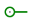

Note: Il existe deux présentations des circuits. Nous présentons ici la nouvelle apparence. Une bonne partie des explications convient aussi pour l'autre présentation. La version de la présentation est sélectionnable dans les propriétés du circuit (Nouvelle apparence).
Par défaut quand est sous-circuit est placé sur un schéma il est dessiné dans un rectangle avec le nom du circuit au sud, les entrées a l'est et les sorties a l'ouest. L’ancrage étant au sommet de la pin nord-ouest.
Les entrées seront placées à l'est du rectangle et de haut en bas selon l'ordre de leur apparition dans le schéma détaillé (de gauche à droite et de haut en bas). Les sorties seront placées à l'ouest du rectangle de la même manière.
Il est possible d'éditer un label sur l'instance du sous-circuit en effectuant un double-clic sur le rectangle. Le positionnement la fonte et les attributs de la fonte sont modifiables dans le tableau des propriétés. Ce même tableau permet le paramétrage du label partagé (pour toutes les instances).
L'apparence par défaut est très utilisée et existe dans Logisim depuis de nombreuses années sans autres options. Si, toutefois, vous préférez que le sous-circuit soit dessiné différemment, vous pouvez sélectionner depuis le menu et Logisim passera de l'interface édition du dessin a l'interface édition de l'apparence du circuit.
(Vous pouvez également cliquer sur l'icône à l'extrême droite ( ) de la barre d'outils de l'explorateur.)
Ci-dessous, nous modifions l’aspect du multiplexeur 2:1 pour qu’il soit dessiné avec un trapèze habituel plutôt qu'un rectangle.
) de la barre d'outils de l'explorateur.)
Ci-dessous, nous modifions l’aspect du multiplexeur 2:1 pour qu’il soit dessiné avec un trapèze habituel plutôt qu'un rectangle.
Avec l'apparence du multiplexeur 2:1 dessiné ci-dessus, la disposition du multiplexeur 4:1 se présente naturellement comme suit.
L'éditeur d'apparence se présente comme un programme de dessin traditionnel, mais il utilise quelques symboles spéciaux pour préciser certain paramètre du dessins du sous-circuit utilisés lorsqu'il est placé dans le dessin d'un circuit. Ces symboles spéciaux ne peuvent pas être supprimés.
Un cercle vert avec une ligne sortante, que nous appellerons ancre (). Il y a exactement une ancre dans chaque apparence d'un sous-circuit. Chaque composant d'un circuit a un seul point pour identifier sa position sur le dessin; un utilisateur observe cela lors de la création d'un nouveau composant: le clic de la souris identifie un seul point de l'écran et le composant est placé par rapport à ce point. L'ancre sera alignée avec ce point du dessin global lorsque le sous-circuit est créé et dessiné.
L'ancre indique aussi l'orientation du composant quand il est inséré dans le dessin, elle en est le centre de rotation. L'orientation est indiquée par la direction de la ligne qui pointe du cercle. Dans le dessin du sous-circuit, il est possible de modifier l'orientation de l'ancre dans les propriétés. Cela indiquera quelle orientation aura le symbole quand on le dépose sur un circuit. Dans notre exemple l'ancre du sous-circuit "Mux_2To1" est orientée à l'est et chaque instance du sous-circuit multiplexeur est également face à l'est dans le dessin du sous-circuit "Mux_4To1"
Les cercles bleus ( ) et les carrés avec un point (
) et les carrés avec un point ( ) sont les connexions du sous-circuit. Il y a exactement autant de symboles que de broche d'entrée et de sorties.
Les connexions en entrée sont indiquées par des carrés et les connexions en sortie par des cercles.
Chaque symbole indique comment un fil se connectant au circuit correspondra à une broche d'entrée ou de sortie dans la mise en page.
) sont les connexions du sous-circuit. Il y a exactement autant de symboles que de broche d'entrée et de sorties.
Les connexions en entrée sont indiquées par des carrés et les connexions en sortie par des cercles.
Chaque symbole indique comment un fil se connectant au circuit correspondra à une broche d'entrée ou de sortie dans la mise en page.
Lorsque vous sélectionnez une connexion, Logisim indiquera la broche correspondante en faisant apparaitre un diagramme miniature de la disposition dans une fenêtre en bas à droite et la broche correspondante dessinée en bleu. Cela ne se fait pas si toutes les connexions sont sélectionnés.
Nous pouvons modifier le zoom de l'image à l'aide du bouton fléché en bas sur la gauche de l'espace de travail. Le taux est affiché.
La barre d'outils contient des outils pour ajouter des formes supplémentaires, comme indiqué ci-dessous avec des descriptions de la façon dont la touche Alt modifie le comportement de l'outil. En outre en faisant glisser la souris avec la touche contrôle enfoncée la position de la souris sera alignée sur le point de la grille le plus proche. La touche Maj enfoncée orientera les lignes dans un multiple de 45°.
| Sélectionne, déplace, copie, colle les symboles. | |
| Insert ou édite un text. | |
| Crée un segment de ligne. Maj + Glisser : La ligne sera dans un angle multiple de 45°. | |
| Crée une courbe de Bezier. Le premier clic et glisser spécifie le début de la ligne, le second clic et glisser termine la ligne et définit la courbure. Un clic sur la ligne vous montre les points de contrôle. Maj et point central de contrôle imposent une courbe symétrique. Alt et point central dessine la courbe au travers du point de contrôle (sous la souris). | |
| Crée une séquence de lignes connectées, chaque clic commence une nouvelle ligne. Un double-clic termine la séquence. | |
| Crée un rectangle en glissant depuis un angle vers l'angle opposé. Maj+glisser pour créer un carré et Alt+glisser pour commencer au centre. | |
| Crée un rectangle avec bord arrondi en glissant depuis un angle vers l'angle opposé. Maj+glisser pour créer un carré et Alt+glisser pour commencer au centre. | |
| Crée un ovale en glissant depuis un angle vers l'angle opposé. Maj+glisser pour créer un cercle et Alt+glisser pour commencer au centre. | |
| Crée un polygone, chaque clic commence une nouvelle face. Un double-clic termine la séquence. |
Suite: Deboguer un sous-circuit.